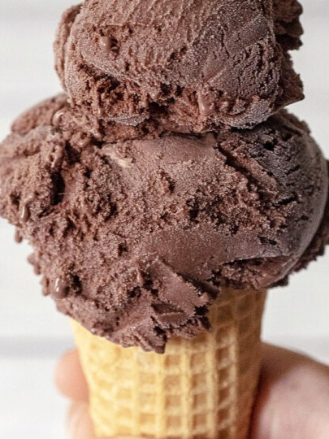
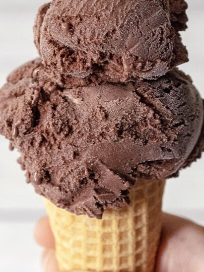

Welcome to our ice cream shop!
Welcome to our delightful ice cream store where we offer a variety of classic and delicious flavours to satisfy your sweet tooth! Our selection includes the timeless favourites of chocolate, vanilla, and strawberry, made with the highest quality ingredients to ensure a mouth-watering experience.
Whether you're in the mood for a creamy scoop on a hot summer day or just need a little pick-me-up after a long day, we've got you covered. Our friendly staff are always ready to help you choose the perfect flavour, and we also offer a range of toppings and sauces to add that extra special touch.
So why not treat yourself to a scoop (or two!) of our scrumptious ice cream today? We guarantee you won't be disappointed!
Our history
Welcome to Sweet Life, the ultimate destination for all ice cream lovers! Our story began many years ago, when our founder, Hai Anh, had a vision to create a place where people could enjoy high-quality, delicious ice cream in a warm and welcoming environment. Hai Anh's passion for ice cream began at a young age, when he used to help his grandmother churn homemade ice cream in the kitchen. He quickly fell in love with the process of creating different flavors and experimenting with new ingredients. Years later, Hai Anh decided to turn his love of ice cream into a business, and thus Sweet Life was born. He worked tirelessly to perfect his recipes, using only the finest ingredients and taking inspiration from his travels around the world. Word quickly spread about the amazing ice cream at Sweet Life, and soon the small shop became a local favorite. People came from far and wide to try our unique flavors and enjoy the cozy, welcoming atmosphere. Today, Sweet Life has grown into a thriving ice cream store with multiple locations, but our commitment to quality and passion for ice cream remains the same. We continue to create new and exciting flavors, using only the best ingredients and traditional methods, to bring joy and happiness to our customers. Come and join us for a scoop (or two!) of our delicious ice cream, and experience the Sweet Life for yourself!
Our finest Ice Cream Menu:
 



| Flavour | Price | Description |
|---|---|---|
| Vanilla | $1 | Vanilla ice cream is a classic frozen dessert made from a mixture of cream, sugar, and vanilla extract. It is churned to create a smooth and creamy texture, and it has a rich and sweet flavor with notes of vanilla. It can be enjoyed on its own or used as a topping for other desserts, and it is a popular flavor for milkshakes and other ice cream-based drinks. |
| Chocolate | $1 | Chocolate ice cream is a frozen dessert made from a mixture of milk, cream, sugar, and cocoa powder or melted chocolate. It is churned to create a smooth and creamy texture, and it has a rich and indulgent chocolate flavor. It can be enjoyed on its own or used as a topping for other desserts, and it is a popular flavor for milkshakes and other ice cream-based drinks. |
| Strawberry | $1.25 | Strawberry ice cream is a frozen dessert made from a mixture of milk, cream, sugar, and pureed or chopped strawberries. It is churned to create a smooth and creamy texture, and it has a sweet and fruity flavor with notes of fresh strawberries. It can be enjoyed on its own or used as a topping for other desserts, and it is a popular flavor for milkshakes and other ice cream-based drinks. |
| Matcha | $1.25 | Matcha ice cream is a frozen dessert made from a mixture of milk, cream, sugar, and high-quality matcha powder. It is churned to create a smooth and creamy texture, and it has a unique and distinct flavor that is both sweet and slightly bitter, with notes of earthy and grassy undertones. It is a popular flavor in Japan and other parts of the world, and it can be enjoyed on its own or used as a topping for other desserts. |
| Cookie n Cream | $1.25 | Cookie and cream ice cream is a popular flavor that combines vanilla ice cream with pieces of chocolate sandwich cookies. The vanilla ice cream is typically sweet and creamy, with a rich, smooth texture that provides the perfect canvas for the crunchy cookie pieces. The cookie pieces add a satisfying crunch and a chocolatey flavor to the ice cream, making it a favorite dessert for many. Overall, cookie and cream ice cream is a delicious treat that is loved by people of all ages. |
| Cheese | $1.25 | Cheese flavored ice cream is a unique and unusual flavor that combines the creamy sweetness of ice cream with the tangy and savory taste of cheese. This flavor is typically made with cream cheese, which provides a smooth and rich texture to the ice cream. The cheese flavor can be mild or strong, depending on the type of cheese used, but it usually has a slightly salty taste. |